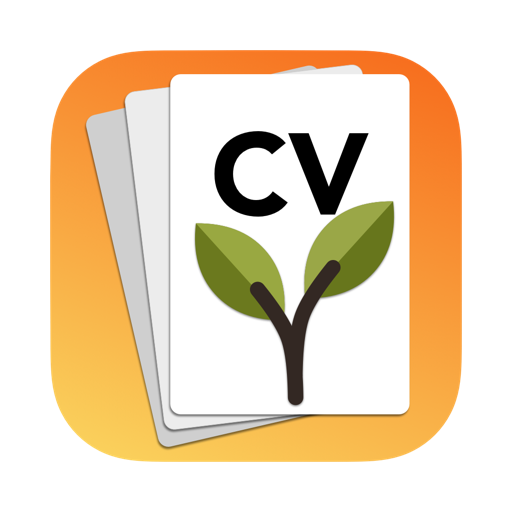

Write your career history once. Make a tailored resume — and cover letter — for every job you apply to.
Every role and every bullet you've ever written, in one place. Each resume picks what fits.
Paste a posting: see which keywords you cover, keep your most relevant work, and reword bullets in the posting's language — checked so nothing gets invented.
Drafted from your own accomplishments and the posting, then yours to edit.
PDF that matches the screen, plus Word and plain text for portals that ask for them. Exporting is never locked.
Keep the exact resume and letter you sent each employer, get reminded to follow up, and move applications along a pipeline.
No account, no server, no analytics. AI runs on your device; sync uses your own iCloud.
Need help, found a bug, or have an idea? I'd love to hear from you.
Email: hello@vijaysharma.ca
Please include your device and the app version (in the App Store, or Fresh Start ▸ About on a Mac).
Yes: File ▸ Import (or Import… on the welcome screen) reads a PDF or Word resume. For LinkedIn, open your profile, choose More ▸ Save to PDF, and import that file. Everything is read on your device. Check roles and dates afterwards — importing from a document is a best guess.
Building your library, editing, importing, exporting (PDF, Word, text), keyword coverage, fit-to-one-page and recording applications are free, with two resumes and eight templates. Pro adds unlimited resumes, every template, AI tailoring, cover-letter drafting, follow-up reminders and the interview pipeline, and AI agent access on the Mac — as a one-time purchase or a yearly plan.
Fresh Start uses Apple Intelligence on your device. It needs a device that supports Apple Intelligence, with it turned on in Settings. Everything else in the app works without it.
Sign in with the same Apple Account and tap Restore Purchase on the Pro screen. Your library syncs through your iCloud.
In your Apple Account's Subscriptions settings (Settings ▸ your name ▸ Subscriptions on iPhone and iPad; App Store ▸ your account on a Mac).